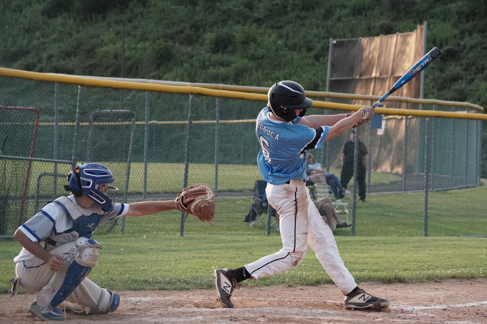

Raleigh's historic night
Cal Raleigh has been known for his power at the plate, but what he accomplished in this game was on another level entirely. The Mariners catcher went deep three times, marking the first three-homer game of his professional career and cementing himself as one of the most dangerous power hitters at his position in all of baseball.
Hitting three home runs in a single MLB game is a rare feat, and for a catcher to do it makes it even more special. The physical demands of catching an entire game while also producing at the plate with that kind of power output is something that very few players in the history of the sport have managed to achieve.
Raleigh's performance was not just about the quantity of home runs but also the quality of them. Each blast showcased different aspects of his hitting ability, from his raw power to his ability to recognize pitches and drive them to all parts of the ballpark.
How the game unfolded
The Mariners entered the game looking to build momentum and Raleigh made sure they got off to the right start. His first home run set the tone early, giving Seattle an early lead and energizing both the dugout and the fans in attendance.
His second home run came at another critical moment, extending the Mariners lead and putting pressure on the opposing pitching staff. By the time Raleigh stepped to the plate for his third at-bat with the opportunity to complete the trifecta, the anticipation in the stadium was palpable.
When he connected for his third home run, the celebration was immediate. Teammates greeted him at home plate with excitement, and the crowd erupted in appreciation of the historic performance they had just witnessed.
The Mariners went on to secure the victory, with Raleigh's three home runs serving as the driving force behind the win. The final score reflected just how dominant his individual performance was on a night where offense was the story.
Raleigh's growing impact this season
This three-homer performance was not an isolated incident but rather a continuation of what has been an impressive power display from Raleigh throughout the season. The catcher has established himself as one of the premier power-hitting backstops in the American League, and games like this only reinforce that reputation.
Raleigh's ability to combine elite defensive work behind the plate with this level of offensive production makes him an invaluable asset for the Mariners. Few players in the league can match the total package that he brings to the field on a nightly basis, and his value to the team continues to grow with each passing month.
What this means for the Mariners going forward
The Mariners have been working to establish themselves as contenders, and performances like this from Raleigh are exactly what the team needs as they push toward the postseason. Having a catcher who can change the game with one swing of the bat adds a dimension to the lineup that most teams simply do not have.
This game also serves as a statement to the rest of the league that the Mariners offense is capable of exploding at any time. When players like Raleigh are swinging the bat this well, it creates a ripple effect throughout the entire lineup, making opposing pitchers work harder and creating more opportunities for everyone in the batting order.
For Raleigh personally, this three-home run game could serve as a springboard for an even bigger second half of the season. Confidence is everything in baseball, and a performance like this can carry a player for weeks or even months as they continue to build on the momentum and establish themselves as one of the top power hitters in the game.
More thrilling baseball moments
Raleigh's three-homer outburst is just the latest in what has been an exciting stretch of baseball across the league. Fans have been treated to incredible individual performances and dramatic team victories that remind everyone why baseball is called the national pastime.
If you enjoy thrilling late-game drama, you will want to check out our coverage of another remarkable game where the Phillies Comeback Stuns Cardinals in Ninth-Inning Rally at https://dhyey.bond/blog/phillies-comeback-stuns-cardinals-in-ninth-inning-rally/. That article breaks down how Philadelphia pulled off an unforgettable victory in the final frame, showing that baseball magic can happen at any moment.
Baseball continues to deliver unforgettable moments night after night, and whether it is a catcher going deep three times or a team rallying in the ninth inning, there is always something incredible happening on the diamond. Stay tuned for more coverage of the biggest stories in baseball right here at dhyey.bond.
See Also
If you enjoyed this Baseball News article, check out Phillies Comeback Stuns Cardinals in Ninth-Inning Rally for more useful reading.